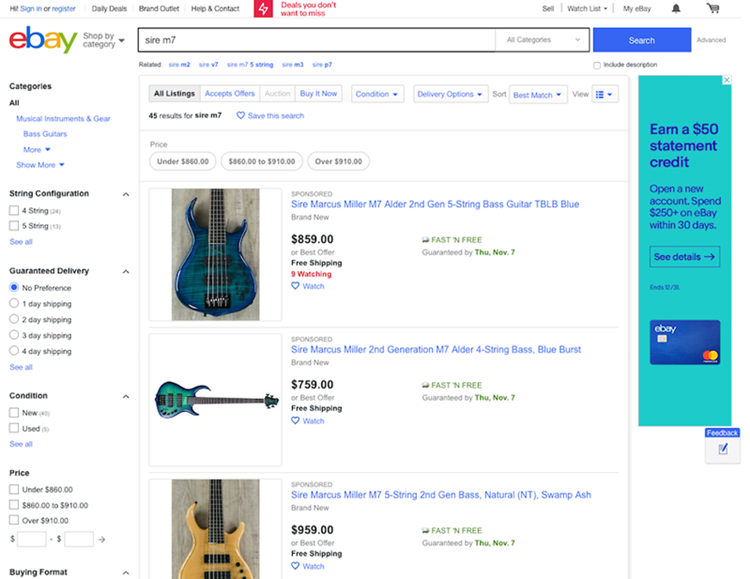

nexial.screenshot.caption When performing desktop or web automation, one can indicate the desire to capture the screenshot (of the current active desktop or application) after completing a specific test step. This is done by marking a
x on the corresponding test step (at Column L).However, one might find it useful to "annotate" the screenshots with additional text to provide further clarity or context. For example, compare the following 2 captured screenshots:

These two images are practically identical, excep the second one has additional caption at its bottom-right corner. As such, the second image provides its viewer information that may be helpful towards understanding its context or troubleshoot an underlying defect.
To generate caption, simply define the caption to use via this System variable. For example:

Notice that Nexial built-in functions are used here. One can use regular data variable, built-in functions and Nexial expression dynamically define the screen captions.
Note that, while it is possible to specify this System variable via base »
base(var,value) command, it is not recommend because the caption will be evaluated and saved as is when the corresponding test step is executed. Instead, define this System variable via a data file or project.properties to maintain its dynamic value (geek term: late binding).See other
nexial.screenshot.caption.* System variables for more configuration options.